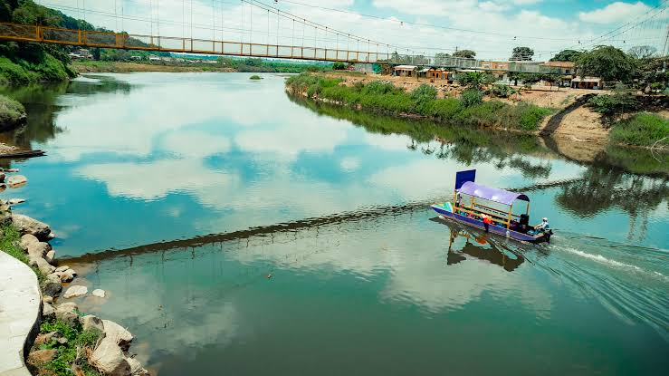
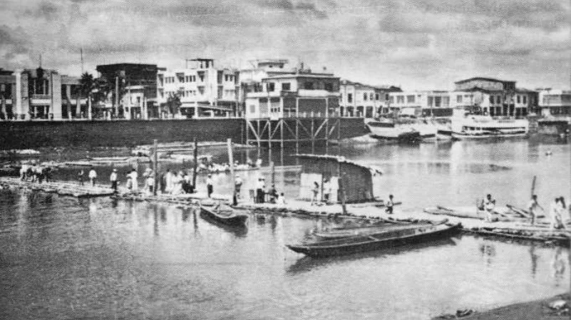
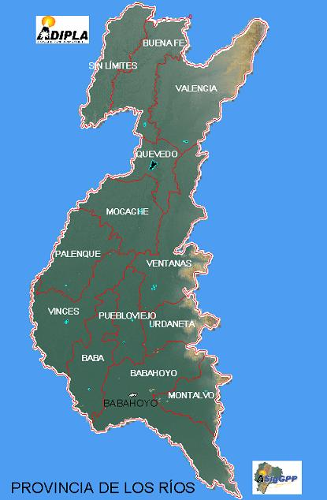
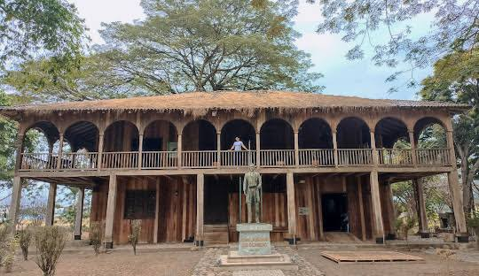
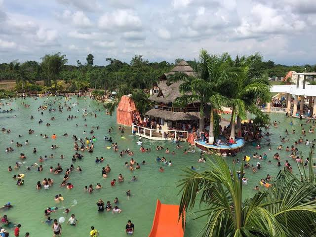
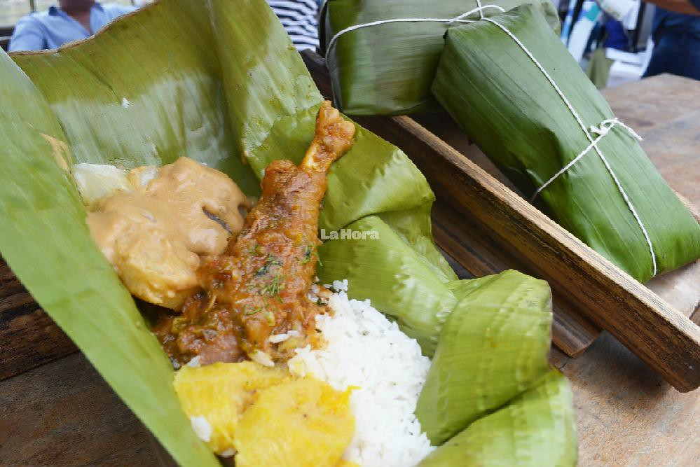

Conoce nuestra provincia, su historia, cultura y turismo.

Los Ríos es una provincia del Ecuador ubicada en la región Costa. Se caracteriza por sus extensas zonas agrícolas, sus numerosos ríos y su gran riqueza natural. Es una provincia reconocida por la producción de arroz, cacao, banano, maíz y otros productos que contribuyen al desarrollo económico del país. Su capital es la ciudad de Babahoyo, un importante centro comercial y administrativo. Además, Los Ríos posee una gran diversidad de costumbres, tradiciones y expresiones culturales que representan la identidad de sus habitantes.
La designación de Tito Galo Lara Yépez como nuevo gobernador de Los Ríos, mediante el Decreto Ejecutivo 219 firmado por el presidente Daniel Noboa el martes 18 de noviembre de 2025, ha generado reacciones intensas y divididas en la provincia. Esta decisión revive la trayectoria de uno de los personajes más controvertidos de la política riosense. Lara, originario del cantón Quevedo, se vinculó al movimiento Sociedad Patriótica y fue asambleísta entre 2007 y 2013. Durante su gestión en la Asamblea, se destacó por su papel en comisiones de fiscalización y control, presentando denuncias por presunta corrupción durante el gobierno de la Revolución Ciudadana.

La provincia de Los Ríos fue creada el 6 de octubre de 1860. Su historia está relacionada con el desarrollo agrícola, comercial y cultural del Ecuador.

La provincia de Los Ríos se encuentra ubicada en la región Costa del Ecuador. Su territorio está rodeado de importantes recursos naturales y cuenta con numerosos ríos que atraviesan diferentes sectores de la provincia. Limita al norte con Santo Domingo de los Tsáchilas; al sur con Guayas; al este con Cotopaxi y Bolívar; y al oeste con Guayas y Manabí. Gracias a sus condiciones geográficas y climáticas, posee tierras apropiadas para diferentes actividades agrícolas y ganaderas.
Los Ríos cuenta con una población distribuida en 13 cantones, donde se encuentran ciudades, parroquias urbanas y rurales. Sus habitantes se dedican a diferentes actividades económicas, entre ellas la agricultura, ganadería, comercio, transporte, educación y servicios. La población mantiene vivas diversas tradiciones y costumbres que forman parte de la identidad cultural de la provincia. Según los resultados oficiales del último censo de población realizado en Ecuador (Censo 2022) por el INEC, la provincia de Los Ríos cuenta con un total de 898.652 habitantes


La provincia de Los Ríos cuenta con diferentes lugares turísticos que permiten disfrutar de la naturaleza, la cultura y la recreación. Entre sus principales atractivos se encuentran los ríos, balnearios de agua dulce, parques, espacios naturales y centros recreativos. Estos lugares son visitados por familias y turistas que buscan descansar, disfrutar de la gastronomía local y conocer las tradiciones de sus habitantes. El turismo también representa una oportunidad para impulsar los pequeños negocios y el desarrollo económico de las comunidades.

La gastronomía de Los Ríos es una parte importante de su identidad cultural. Sus platos tradicionales se elaboran con productos agrícolas y alimentos propios de la región. Entre las preparaciones representativas se encuentran el seco de gallina criolla, el bollo, las humitas, los muchines y diferentes platos preparados con pescado y plátano verde. Cada cantón posee costumbres gastronómicas particulares que reflejan la creatividad y las tradiciones de sus habitantes.
Conoce los 13 cantones de nuestra provincia y descubre sus costumbres, historia, gastronomía y lugares turísticos.